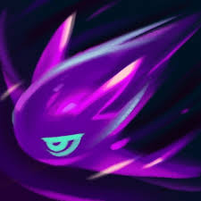
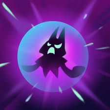
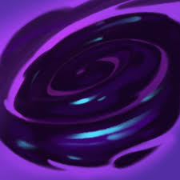
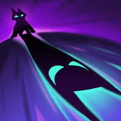

Vex 🌑

Who is Vex?
Vex is a gloomy Yordle mage from League of Legends who thrives in darkness and negativity. She dislikes excitement, energy, and “happy vibes,” preferring silence and shadows.
Lore
Vex lives in the Shadow Isles, a cursed land filled with dark magic and restless spirits. Unlike other Yordles who are cheerful and curious, Vex embraces sadness and isolation.
Her power comes from a shadow companion called “Shadow,” who amplifies her emotions and magic. Together, they spread gloom wherever they go, shutting down anything bright or joyful.
🎮 Gameplay
Vex Highlights 🌑
Shadow Burst Plays 💀
Personality
Vex is introverted, sarcastic, and constantly annoyed by anything energetic or cheerful. She prefers solitude and often rejects teamwork unless absolutely necessary.
Abilities
-

Mistral Bolt: Sends a shadow bolt that damages enemies in a straight line. -

Personal Space: Creates a shield that fears enemies when broken. -

Looming Darkness: Marks an area that slows and damages enemies. -

Shadow Surge: Launches a shadow that marks enemies and lets Vex dash to them.